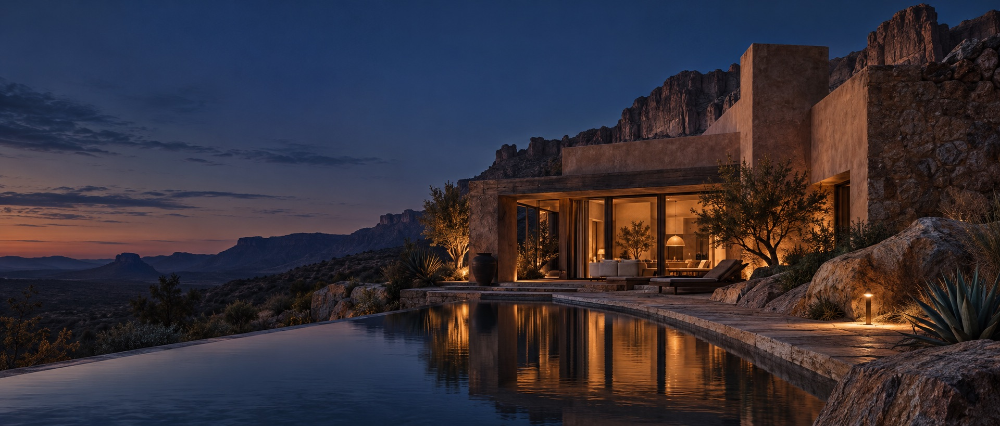

SMALL WEBSITES, BIG FEELINGDigital places
FEATURED EXPERIENCECasa Sombra ↗
Digital places
with a point of view.
Independent website concepts, made to feel like somewhere you want to stay.
Scroll to explore ↓A / 07
SELECTED CONCEPTS / 2026A few worlds
A few worlds
to wander into.
Seven fictional brands. Seven different moods. Each project is a small experiment in how a website can make you feel.
07 PROJECTS
DRAG TO DISCOVER ↗01 / INTERACTIVE PLACECasa Sombra ↗Stay somewhere slower. Explore the property map.
 SMALL-BATCH PERFUMERY ↗02 / EDITORIAL SHOPLumen Botanica ↗Fragrance, gathered slowly.
SMALL-BATCH PERFUMERY ↗02 / EDITORIAL SHOPLumen Botanica ↗Fragrance, gathered slowly.
 CABIN / HIGH DESERT ↗03 / HOSPITALITYEmber & Pine ↗A little cabin. A big sky.
CABIN / HIGH DESERT ↗03 / HOSPITALITYEmber & Pine ↗A little cabin. A big sky.
 INTERACTIVE MENU ↗04 / BOWL BUILDERMoon Rabbit Bowl Lab ↗Build a bowl. Find your heat.
☕DAYBREAK
INTERACTIVE MENU ↗04 / BOWL BUILDERMoon Rabbit Bowl Lab ↗Build a bowl. Find your heat.
☕DAYBREAK
COFFEENEIGHBORHOOD CAFÉ ↗05 / LOCAL FAVORITEDaybreak Coffee ↗A softer start to the day. ✳PAW
& PETALGENTLE GROOMING ↗06 / PET CAREPaw & Petal ↗Fresh little feelings for furry friends. ✳NEST
& NEATHOME, RESET ↗07 / HOME SERVICENest & Neat ↗Room to breathe again.
SMALL-BATCH PERFUMERY ↗02 / EDITORIAL SHOPLumen Botanica ↗Fragrance, gathered slowly.
CABIN / HIGH DESERT ↗03 / HOSPITALITYEmber & Pine ↗A little cabin. A big sky.
INTERACTIVE MENU ↗04 / BOWL BUILDERMoon Rabbit Bowl Lab ↗Build a bowl. Find your heat.
☕DAYBREAKCOFFEENEIGHBORHOOD CAFÉ ↗05 / LOCAL FAVORITEDaybreak Coffee ↗A softer start to the day. ✳PAW
& PETALGENTLE GROOMING ↗06 / PET CAREPaw & Petal ↗Fresh little feelings for furry friends. ✳NEST
& NEATHOME, RESET ↗07 / HOME SERVICENest & Neat ↗Room to breathe again.
The best websites don't just look good.
They make the next step feel obvious.